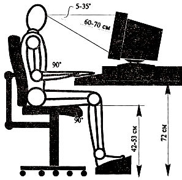

Правила безопасности работы за компьютером.
Наверное все понимают, что работа за компьютером может быть вредна для здоровья. Но вот насколько, при каких обстоятельствах и возможно ли этот вред исключить или хотя бы минимизировать? Ответ прост: надо комфортно оборудовать своё рабочее место и правильно организовать свою работу.
К сожалению, большинство пользователей мало уделяет внимания правильному оборудованию своего рабочего места. Часто монитор установлен слишком высоко или слишком низко, свет падает не так, его много или его недостаточно, руки расположены неудобно и т.д. В результате со временем появляются проблемы со здоровьем. В то же время при соблюдении необходимых условий и использовании определённых средств работа с компьютером безопасна и безвредна.
Здесь Вам даётся несколько полезных советов, которые помогут Вам сохранить своё здоровье и сделать работу за компьютером максимально комфортной.